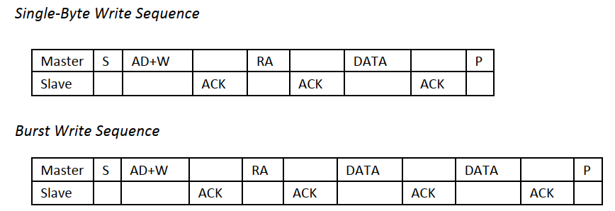

ICM20948
1.1 概述¶
ICM-20948是一个多芯片模块(MCM)，由两个芯片集成到一个单QFN封装中。其中一个芯片包含一个三轴陀螺仪、三轴加速度计和一个数字运动处理器。™(DMP)。另一个芯片封装了来自旭化成微器件公司的AK09916(3轴磁力计)。
1.2 ICM20948框图¶

1.3 I2C接口¶
1.3.1 从机地址¶
ICM-20948 的从机地址为 1101 00X 的 7 Bit长度，其中AD0引脚可以控制 “X” 位，若AD0为低电平则从机地址为 1101 000，而当AD0为高电平时则从机地址为 1101 001。
1.3.1 I2C时序¶
起始条件以后：
- 主机发送 7 Bit的从机地址（ 1101000 ），第 8 Bit为读写位。然后，主机释放SDA并等待从机设备的应答位。
- 每一个字节传输完，必须跟随一个应答位。
- 从机设备在SCL高电平期间，拉低SDA并保持SDA为Low，表示应答。
- 数据传输必须由主机发送结束条件终止。

1.3.2 写ICM20948寄存器¶
- 主机发送起始条件，紧跟着 7 Bit ICM20948地址和写位(0)。
- 从机设备ICM20948 发送应答位。
- 主机发送寄存器地址。
- 从机设备ICM20948 发送应答位。
- 主机发送需要写入的数据。
- 从机设备ICM20948 发送应答位。
- 主机发送结束条件，一个字节数据传输终止。

1.3.3 读ICM20948寄存器¶
- 主机发送起始条件，紧跟着 7 Bit ICM20948地址和写位(0)。
- 从机设备ICM20948 发送应答位。
- 主机发送寄存器地址。
- 从机设备ICM20948 发送应答位。
- 主机再次发送起始条件，紧跟着7 Bit ICM20948地址和读位(1)。
- 从机设备ICM20948 发送应答位，并返回寄存器数据。
- 通信以无应答和主机发送结束条件终止。

1.4 SPI接口¶
待更新。。。
1.5 I2C接口驱动¶
1.5.1 软件模拟I2C通信¶
源码和软件模拟原理在我的个人网站：软件模拟I2C
模拟的GPIO口自定义，不过多赘述。
1.5.2 测试模拟I2C¶
核心测试程序，放在初始化之后就行，原理就是ICM20948 芯片是否有应答：
- 输入正确的地址应该有应答返回 ack=0
- 输入错误的地址应该无应答返回 ack=1 (一定要测试无应答这部分)
C
uint8_t ack;
I2C_Start();
I2C_WriteByte(0xD0);
ack = I2C_ReceiveAck();
I2C_Stop();
OLED_ShowNum(0, 0, ack, 1, 16);
1.5.3 完整驱动¶
icm20948.c
C
#include "icm20948.h"
#include "oled.h"
#define I2C
#ifdef I2C
static void ICM20948_WriteByte(uint8_t SlaveAddress, uint8_t RegisterAddress, uint8_t RegisterData) {
I2C_Start();
I2C_WriteByte(SlaveAddress|0x00);
I2C_ReceiveAck();
I2C_WriteByte(RegisterAddress);
I2C_ReceiveAck();
I2C_WriteByte(RegisterData);
I2C_ReceiveAck();
I2C_Stop();
}
static uint8_t ICM20948_ReadByte(uint8_t SlaveAddress, uint8_t RegisterAddress) {
uint8_t RegisterData;
I2C_Start();
I2C_WriteByte(SlaveAddress|0x00);
I2C_ReceiveAck();
I2C_WriteByte(RegisterAddress);
I2C_ReceiveAck();
I2C_Start();
I2C_WriteByte(SlaveAddress|0x01);
I2C_ReceiveAck();
RegisterData = I2C_ReadByte();
I2C_WriteAcK(1);
I2C_Stop();
return RegisterData;
}
#endif
#ifdef SPI
static void ICM20948_WriteByte(uint8_t RegisterAddress, uint8_t RegisterData) {
SPI_Start();
/* 发送读指令和寄存器地址 */
SPI_SwapByte(0x00|RegisterAddress);
/* 发送数据 */
SPI_SwapByte(RegisterData);
}
static uint8_t ICM20948_ReadByte(uint8_t RegisterAddress) {
uint8_t value;
/* 开始SPI */
SPI_Start();
/* 发送读指令和寄存器地址 */
SPI_SwapByte(0x80|RegisterAddress);
/* 接收数据数据 */
value = SPI_SwapByte(0xFF);
/* 结束SPI */
SPI_Stop();
return value;
}
#endif
#ifdef HW_SPI
static void ICM20948_Enable(void) {
HAL_GPIO_WritePin(GPIOB, GPIO_PIN_12, GPIO_PIN_RESET);
}
static void ICM20948_Disable(void) {
HAL_GPIO_WritePin(GPIOB, GPIO_PIN_12, GPIO_PIN_SET);
}
static void ICM20948_WriteByte(uint8_t RegisterAddress, uint8_t RegisterData) {
ICM20948_Enable();
/* 发送读指令和寄存器地址 */
HAL_SPI_Transmit(&hspi2, (uint8_t *) (0x00 | RegisterAddress), 1, 1000);
/* 发送数据 */
HAL_SPI_Transmit(&hspi2, &RegisterData, 1, 1000);
ICM20948_Disable();
}
static uint8_t ICM20948_ReadByte(uint8_t RegisterAddress) {
uint8_t value;
/* 开始SPI */
ICM20948_Enable();
/* 发送读指令和寄存器地址 */
HAL_SPI_Transmit(&hspi2, (uint8_t *) (0x80 | RegisterAddress), 1, 1000);
/* 接收数据数据 */
HAL_SPI_Receive(&hspi2, &value, 1, 1000);
/* 结束SPI */
ICM20948_Disable();
return value;
}
#endif
/* 切换寄存器BANK */
static void ICM20948_SelectBank(uint8_t BankX) {
switch (BankX) {
case 0:
/* 0000 0000 */
ICM20948_WriteByte(ICM20948_ADDRESS, ICM20948_REG_BANK_SEL, 0x00);
break;
case 1:
/* 0001 0000 */
ICM20948_WriteByte(ICM20948_ADDRESS, ICM20948_REG_BANK_SEL, 0x10);
break;
case 2:
/* 0010 0000 */
ICM20948_WriteByte(ICM20948_ADDRESS, ICM20948_REG_BANK_SEL, 0x20);
break;
case 3:
/* 0011 0000 */
ICM20948_WriteByte(ICM20948_ADDRESS, ICM20948_REG_BANK_SEL, 0x30);
break;
default:
ICM20948_WriteByte(ICM20948_ADDRESS, ICM20948_REG_BANK_SEL, 0x00);
}
}
/* ICM20948初始化 */
void ICM20948_Init(void) {
/* BANK 0 */
/* 选择bank0 */
ICM20948_SelectBank(0);
/* 复位寄存器,取消睡眠模式 */
ICM20948_WriteByte(ICM20948_ADDRESS, ICM20948_PWR_MGMT_1, 0x80);
vTaskDelay(100);
/* 自动选择合适的时钟源 */
ICM20948_WriteByte(ICM20948_ADDRESS, ICM20948_PWR_MGMT_1, 0x01);
/* 开启陀螺仪和加速度计的所有轴 */
ICM20948_WriteByte(ICM20948_ADDRESS, ICM20948_PWR_MGMT_2, 0x00);
/* BANK 1 NONE */
/* BANK 2 */
/* 选择bank2 */
ICM20948_SelectBank(2);
/* 配置陀螺仪采样频率 1.1kHZ/(0x04+1) = 220HZ */
ICM20948_WriteByte(ICM20948_ADDRESS, ICM20948_GYRO_SMPLRT_DIV, 0x04);
/* 陀螺仪Config,使用DLPF(低通滤波),DLPFCFG=3,设置量程为 ±2000dps */
ICM20948_WriteByte(ICM20948_ADDRESS, ICM20948_GYRO_CONFIG_1, 0x1F);
ICM20948_WriteByte(ICM20948_ADDRESS, ICM20948_GYRO_CONFIG_2, 0x00);
/* 配置加速度计采样频率 1.125kHZ/(0x000A+1) = 102HZ */
ICM20948_WriteByte(ICM20948_ADDRESS, ICM20948_ACCEL_SMPLRT_DIV_1, 0x00);
ICM20948_WriteByte(ICM20948_ADDRESS, ICM20948_ACCEL_SMPLRT_DIV_2, 0x0A);
/* 加速度计Config,使用DLPF(低通滤波),DLPFCFG=3,设置量程为 ±8g */
ICM20948_WriteByte(ICM20948_ADDRESS, ICM20948_ACCEL_CONFIG, 0x1D);
ICM20948_WriteByte(ICM20948_ADDRESS, ICM20948_ACCEL_CONFIG_2, 0x00);
/* BANK 3 NONE */
}
/* 磁力计初始化(待测试) */
void AK09916_Init(void) {
ICM20948_SelectBank(0);
ICM20948_WriteByte(ICM20948_ADDRESS, ICM20948_USER_CTRL, 0x00);
ICM20948_WriteByte(ICM20948_ADDRESS, ICM20948_INT_PIN_CFG, 0x82);
}
/* IMU单元应答测试 */
void ICM20948_AckTest(void) {
uint8_t ack;
I2C_Start();
I2C_WriteByte(0xD0);
ack = I2C_ReceiveAck();
I2C_Stop();
OLED_ShowNum(0, 0, ack, 1, 16);
}
uint8_t ICM20948_ReadDeviceID(void) {
ICM20948_SelectBank(0);
return ICM20948_ReadByte(ICM20948_ADDRESS, ICM20948_WHO_AM_I);
}
uint8_t AK09916_ReadDeviceID(void) {
// ICM20948_SelectBank(0);
return ICM20948_ReadByte(AK09916_ADDRESS, AK09916_WIA);
}
void ICM20948_Address_Change(void) {
HAL_GPIO_WritePin(IMU_AD0_GPIO_Port, IMU_AD0_Pin, GPIO_PIN_SET);
}
/* 读取加速度计、陀螺仪数据 */
void ICM20948_ReadData(ImuData* data) {
/* 加速度真实值: 寄存器值/4095 ; 4095 = 65535/16 = 16位ADC/量程
* 角速度真实值: 寄存器值/16.4 ; 16.4 = 65535/4000 = 16位ADC/量程
* */
ICM20948_SelectBank(0);
uint8_t accX_H = ICM20948_ReadByte(ICM20948_ADDRESS, ICM20948_ACCEL_XOUT_H);
uint8_t accX_L = ICM20948_ReadByte(ICM20948_ADDRESS, ICM20948_ACCEL_XOUT_L);
data->AccX = ((accX_H << 8) | accX_L);
uint8_t accY_H = ICM20948_ReadByte(ICM20948_ADDRESS, ICM20948_ACCEL_YOUT_H);
uint8_t accY_L = ICM20948_ReadByte(ICM20948_ADDRESS, ICM20948_ACCEL_YOUT_L);
data->AccY = ((accY_H << 8) | accY_L);
uint8_t accZ_H = ICM20948_ReadByte(ICM20948_ADDRESS, ICM20948_ACCEL_ZOUT_H);
uint8_t accZ_L = ICM20948_ReadByte(ICM20948_ADDRESS, ICM20948_ACCEL_ZOUT_L);
data->AccZ = ((accZ_H << 8) | accZ_L);
uint8_t GyroX_H = ICM20948_ReadByte(ICM20948_ADDRESS, ICM20948_GYRO_XOUT_H);
uint8_t GyroX_L = ICM20948_ReadByte(ICM20948_ADDRESS, ICM20948_GYRO_XOUT_L);
data->GyroX = ((GyroX_H << 8) | GyroX_L);
uint8_t GyroY_H = ICM20948_ReadByte(ICM20948_ADDRESS, ICM20948_GYRO_YOUT_H);
uint8_t GyroY_L = ICM20948_ReadByte(ICM20948_ADDRESS, ICM20948_GYRO_YOUT_L);
data->GyroY = ((GyroY_H << 8) | GyroY_L);
uint8_t GyroZ_H = ICM20948_ReadByte(ICM20948_ADDRESS, ICM20948_GYRO_ZOUT_H);
uint8_t GyroZ_L = ICM20948_ReadByte(ICM20948_ADDRESS, ICM20948_GYRO_ZOUT_L);
data->GyroZ = ((GyroZ_H << 8) | GyroZ_L);
}
icm20948.h
C
#ifndef __ICM20948_H
#define __ICM20948_H
#include "sw_iic.h"
#include "icm10948_reg.h"
typedef struct {
int16_t AccX;
int16_t AccY;
int16_t AccZ;
int16_t GyroX;
int16_t GyroY;
int16_t GyroZ;
} ImuData;
void ICM20948_Init(void);
void AK09916_Init(void);
uint8_t ICM20948_ReadDeviceID(void);
uint8_t AK09916_ReadDeviceID(void);
void ICM20948_Address_Change(void);
void ICM20948_ReadData(ImuData* data);
void ICM20948_AckTest(void);
#endif